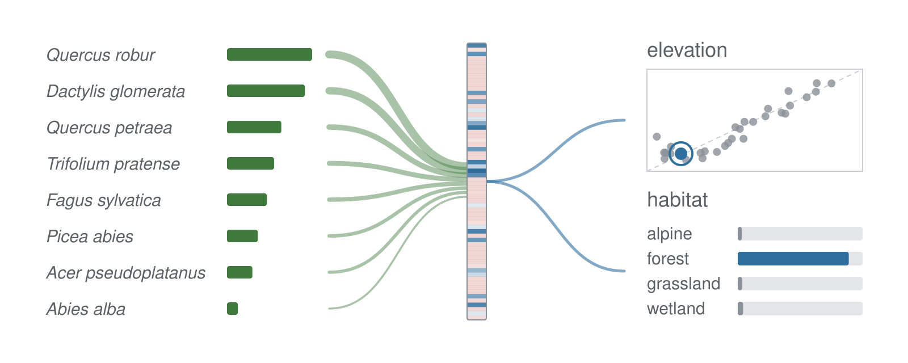

Imputing metadata of vegetation surveys

Vegetation plots record species composition and the cover-abundance of each species, but gaps in their metadata limit their use: in the European Vegetation Archive (EVA), only 13% of plots record all of plot area, altitude, slope, aspect, survey year, location and EUNIS habitat. Species composition reflects site conditions and how a plot was surveyed, so the released RESOLVE models, trained on 1.94 million European vegetation plots from EVA, impute the missing values from composition alone or together with coordinates and survey date. The RESOLVE engine can be used to train a model on any sample recorded as a list of names with an amount for each, such as the insects caught in a trap or the birds counted at a site.
A plot can hold any number of species, so the model pools them, each weighted by its cover, into one vector and imputes every variable from it: continuous ones such as altitude and categorical ones such as habitat, in one model. Training withholds part of the plots and reports each variable’s error on them, so you can compare encodings and inputs on your own data before choosing a model.
RESOLVE lets you:
- Impute several targets from one encoder. Regression and classification targets share the pooled vector. A target labelled on part of the plots can be masked where the label is missing, and those plots still train the other targets.
- Encode the species list five ways. Feature hashing, learned species embeddings, a cover vector over the vocabulary, rank pooling over species, genus and family tables, or a transformer over species tokens.
- Add covariates, coordinates and taxonomy. Numeric covariates, string covariates and coordinates go into the same encoder. Genus and family stand in for a species that was absent from the training data.
- Pretrain without labels. Self-supervised tasks fit the encoder on species lists alone before the supervised fit.
- Score with several models at once. A suite of trained models reports, per plot, the combined imputed value and how far its members agree.
-
Use R, Python or the command line. The RESOLVE engine is a C++ library on libtorch, the C++ core of PyTorch. The R package, the Python package and the
resolveexecutable call it, so a model trained in one loads in the others.
On every push the tests workflow builds the RESOLVE engine and runs the C++ tests, the command-line end-to-end tests and the Python binding tests; the R package goes through R CMD check. Feature hashing follows Weinberger et al. (2009), the transformer encoder Vaswani et al. (2017). Report the RESOLVE version with an analysis, since defaults have changed between versions.
The RESOLVE App runs the released models in your browser, without installing anything. It imputes the EUNIS habitat, altitude, slope, plot area, survey year and location of the example plots or of your own tables, and maps the plots.
Installation
R
The R package, resolveR, compiles a small C++ interface when it is installed from GitHub, so it needs a compiler:
| Operating system | Build tools |
|---|---|
| Windows | Rtools matching your R version |
| macOS | Run xcode-select --install in Terminal |
| Debian / Ubuntu | Install r-base-dev
|
Check that R finds them:
pkgbuild::has_build_tools(debug = TRUE)Then install from GitHub:
# install.packages("pak")
pak::pak("gcol33/resolve/r")The RESOLVE engine in R
The RESOLVE engine is a shared library that bundles libtorch and is not compiled into the package. resolve.install_backend() downloads a prebuilt build into the package’s user data directory once, and resolve.available() reports whether it is loaded:
resolve.install_backend(variant = "cuda") installs the GPU build instead, on Windows and Linux x86-64. It picks the CUDA 12.8 or CUDA 13 line from the installed NVIDIA driver and downloads the matching libtorch (2 to 4 GB) from PyTorch’s server. Training then runs on the card with device = "cuda".
Python
The Python package needs Python 3.10 to 3.14:
The wheels cover Linux x86-64, Windows x86-64 and macOS on Apple Silicon. They link the libtorch inside the torch package, which pip installs with them. On Linux the default PyPI torch is the CUDA build; on Windows and macOS it is the processor build, and the CUDA build on Windows comes from PyTorch’s own index, as set up in Installing the RESOLVE engine. Check what loaded with:
Command line
The resolve executable builds from the RESOLVE engine’s CMake project, as set up in Installing the RESOLVE engine.
Usage
- Prepare two tables: a header table with one row per sample and its targets, and a species table with one row per species observed in a sample.
- Name the columns with
roles, declare each target, and load the tables withresolve.dataset.frame()orresolve.dataset.csv(). - Fit the model with
resolve.train.dataset()and read its metrics on the held-out plots. - Save it with
resolve.save(), then load it withresolve.load()and impute withresolve.predict.dataset().
This example uses the survey that ships with the package: 150 plots in the Alps, their 638 species records and each plot’s elevation and habitat.
library(resolveR)
plots <- read.csv(system.file("extdata", "plots.csv", package = "resolveR"))
species <- read.csv(system.file("extdata", "species.csv", package = "resolveR"))
dataset <- resolve.dataset.frame(
header = plots,
species = species,
roles = list(plot_id = "plot_id", species_id = "species", abundance = "cover"),
targets = list(
elevation = list(column = "elevation", task = "regression"),
habitat = list(column = "habitat", task = "classification")
)
)
resolve.manual_seed(42)
fit <- resolve.train.dataset(dataset, verbose = FALSE)
metrics <- fit$result$final_metrics
round(unlist(metrics$elevation[c("mae", "r2")]), 3)
#> mae r2
#> 285.938 0.625
round(metrics$habitat$accuracy, 3)
#> [1] 0.733Training holds out 20 % of the plots and stops when their loss no longer improves; the metrics are computed on these plots, the mean absolute error (mae) in metres. resolve.manual_seed() fixes the model’s starting weights, so the run ends at the same numbers each time. resolve.save(fit$trainer, "model.pt") writes a checkpoint that carries the species vocabulary, so resolve.predict.dataset() encodes a new table against the species the model was trained on.
The same run in Python:
import pandas as pd
import resolve_core as rc
data = "https://raw.githubusercontent.com/gcol33/resolve/master/r/inst/extdata/"
plots = pd.read_csv(data + "plots.csv")
species = pd.read_csv(data + "species.csv")
roles = rc.RoleMapping()
roles.plot_id = "plot_id"
roles.species_id = "species"
roles.abundance = "cover"
targets = [rc.TargetSpec.regression("elevation"),
rc.TargetSpec.classification("habitat", 4)]
dataset = rc.ResolveDataset.from_pandas(plots, species, roles, targets)
rc.manual_seed(42)
model = rc.ResolveModel(dataset.schema, rc.model_config_for_dataset(dataset))
trainer = rc.Trainer(model, rc.TrainConfig())
trainer.prepare_data(dataset)
result = trainer.fit()
result.final_metricsEncoding the species set
A plot’s species list becomes a fixed-width input in one of five ways: feature hashing ("hash"), learned embeddings of the most abundant species ("embed"), a cover vector over the vocabulary ("sparse"), species, genus and family tables pooled by a cover-weighted mean ("rank_pool"), or species tokens with self-attention ("transformer"). The mode is set in the dataset’s config, as config = list(species_encoding = "rank_pool"). The encoder that takes this input can be a multilayer perceptron, FT-Transformer, TabNet, SAINT, ExcelFormer, TraitNet or a graph network. Encoding the species set compares the five modes on the survey from the example above.
Reading the fit
The trainer keeps the held-out plots and gives their residuals, class probabilities and calibration bins. resolve.cross_validate() refits the model on each of k folds, in spatial blocks when the plots have coordinates. A predictor can also return the pooled vector of each plot, which clusters, projects or feeds another model like any other embedding. The settings and the held-out fold are in Training and reading the fit; what the pooled vectors look like on the survey is in Latent and species embeddings.
Large data and GPUs
The RESOLVE engine runs on CUDA when its build has it. A run that exhausts device memory halves its batch size and retries; an interrupted run resumes from its last checkpoint. Batch size, learning-rate schedules, mixed precision and the memory settings are in Large data and GPUs. The command line trains and imputes with no R or Python installed.
Documentation
Start with Imputing plot attributes from species lists: one path from two tables to a trained model and its imputed values. Every code block on the site has an R and a Python version; the Python view of Get started opens with Python selected.
- Preparing the two tables: roles, targets, missing values and reusing a training vocabulary.
- Encoding the species set: the five encodings and the sample encoders.
- Training and reading the fit: training settings, the held-out fold, cross-validation and checkpoints.
- Imputing new plots: output formats, class probabilities, new species and model suites.
- Latent and species embeddings: the latent space and the learned species tables.
- Large data and GPUs and The command line: scaling a run up.
- Installing the RESOLVE engine: the GPU builds, building from source and the command line.
- R reference and Python reference: every function and class, grouped by job.
Getting help
Questions and bug reports go to the GitHub issues. For a bug, a small reproducible example (for instance made with reprex) and the output of resolve.version() or resolve_core.__version__ make it much quicker to find.
Contributing
Building from a checkout and the test suites are in CONTRIBUTING.md.
Support
“Software is like sex: it’s better when it’s free.” — Linus Torvalds
I’m a PhD student who builds R packages in my free time because I believe good tools should be free and open. I started these projects for my own work and figured others might find them useful too.
If this package saved you some time, buying me a coffee is a nice way to say thanks. It helps with my coffee addiction.
Citation
If you use RESOLVE, please cite it as below.
Colling G (2026). _resolveR: Predicting Sample Outcomes from
Compositional Data_. R package version 1.1.0,
<https://github.com/gcol33/resolve>.BibTeX: